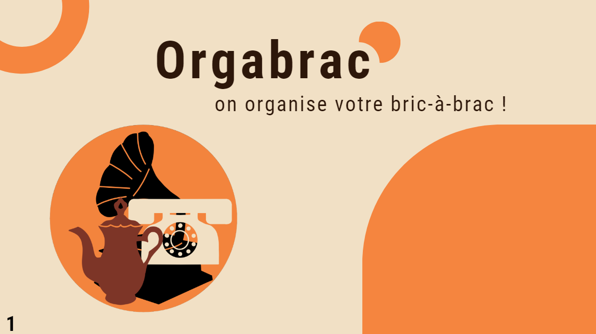
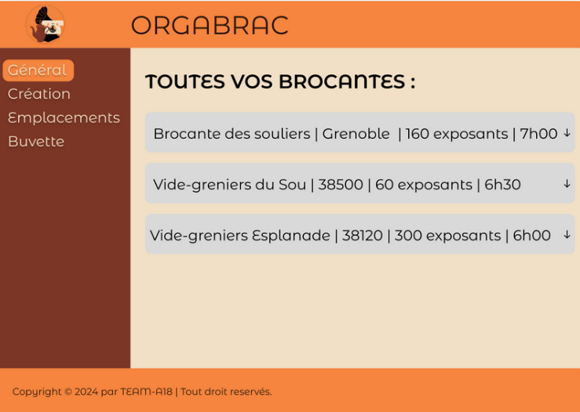
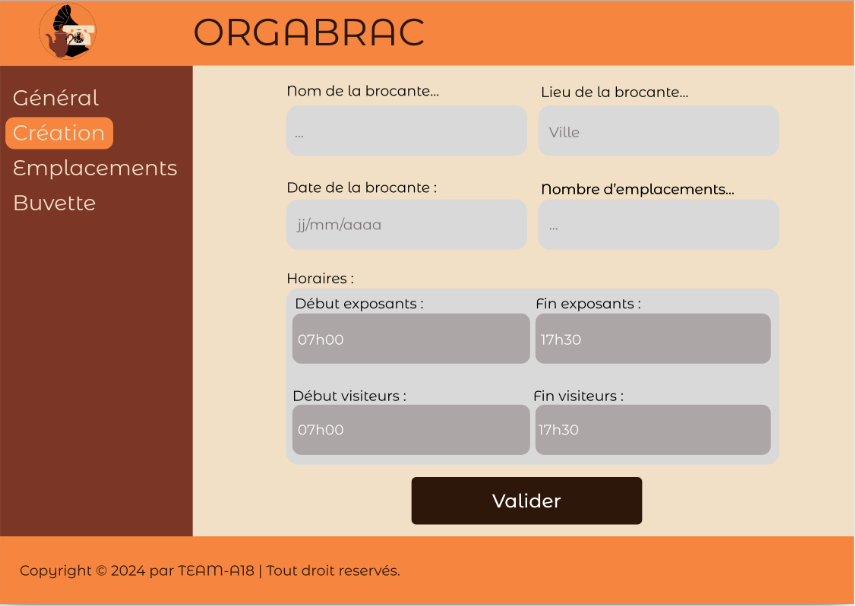

Orgabrac
Application de gestion de brocantes — Java · JavaFX
← Retour aux réalisations
Contexte
Dans le cadre de notre formation en BUT informatique, nous avons réalisé un projet en équipe de six, partant de zéro pour concevoir et développer une application dédiée à la création et à la gestion de brocantes.
Objectifs
- Créer une application simple avec une interface graphique conviviale.
- Choisir une approche de résolution de problème adaptée aux besoins des utilisateurs.
- Conduire un projet en respectant les délais et les exigences.
- Organiser le travail en équipe pour répondre efficacement à un nouveau besoin.
Technologies
Mes réalisations
- Imaginé des fonctionnalités innovantes pour l'application.
- Conçu l'architecture logicielle et l'interface utilisateur.
- Modélisé les différents composants nécessaires au bon fonctionnement de l'application.
- Réalisé le développement et les tests, aboutissant à une application opérationnelle.
Rôle et contributions
J'ai contribué à la création des use cases et des personas, ce qui a permis de mieux cerner les besoins des utilisateurs. Durant la phase de développement, je me suis concentré sur la partie visuelle : réalisation des maquettes puis implémentation en JavaFX.

